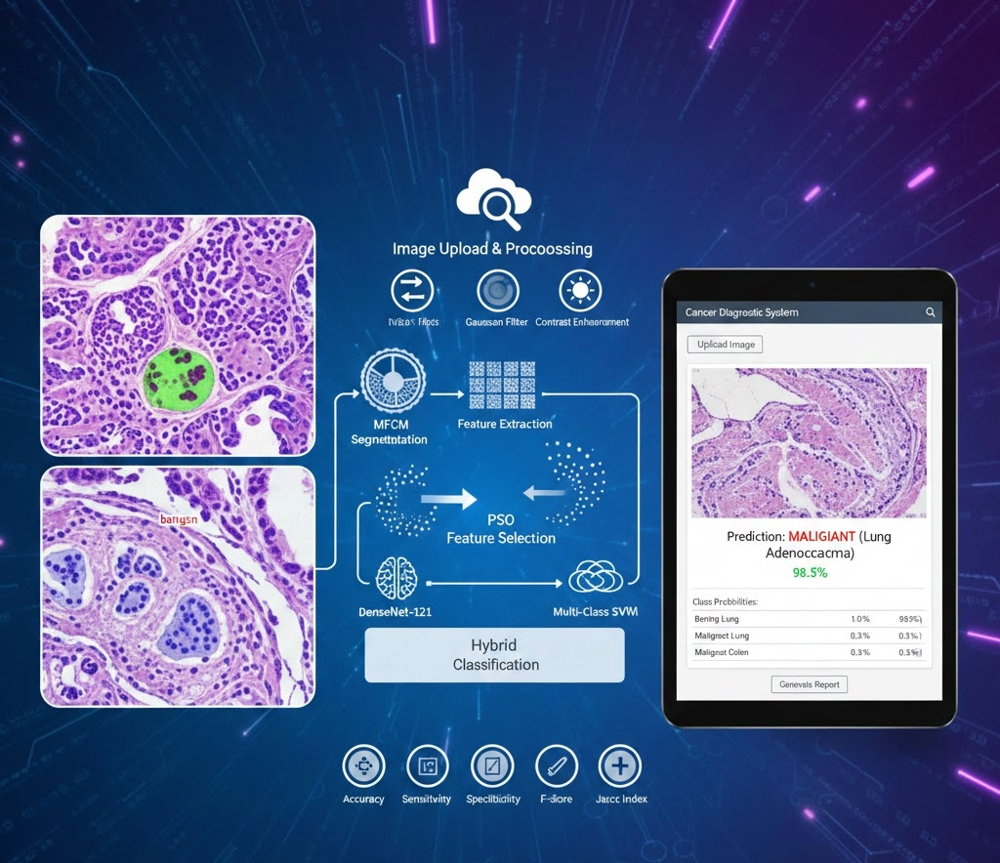
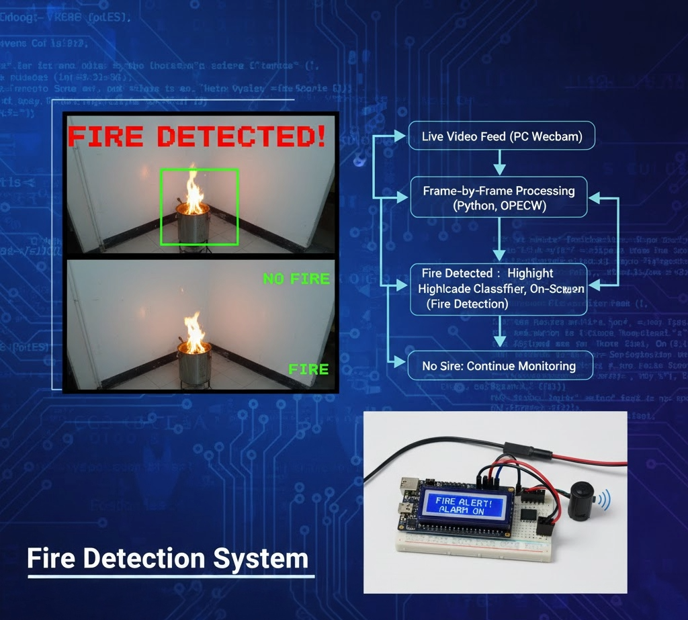
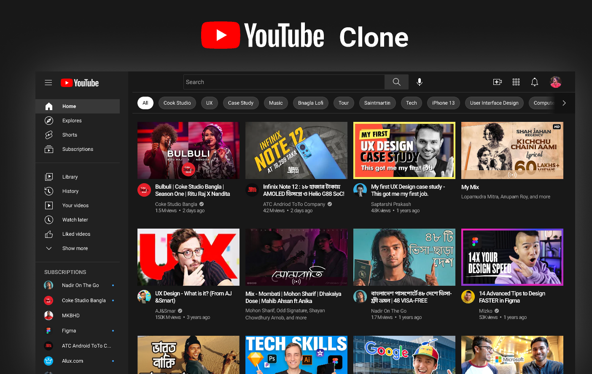
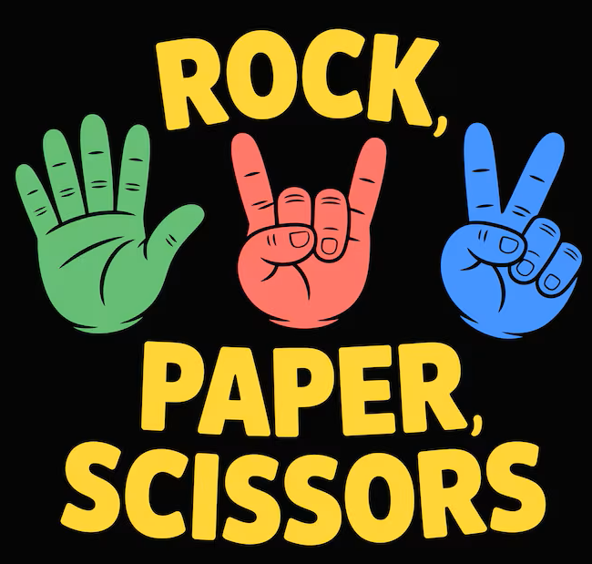

Programming
- C
- Python
- PHP
- JavaScript
I build practical software solutions and engaging web experiences while continuously exploring cybersecurity, backend engineering, and modern development practices. I enjoy turning complex ideas into clean, efficient, user-focused products.
About Me
I am an Electronics and Communication Engineering graduate with a strong interest in software development, web technologies, backend engineering, and cybersecurity. I enjoy building efficient applications that combine clean architecture, optimized logic, and user-focused design.
My experience includes working with system-level concepts, socket programming, Linux environments, and modern web tools. I enjoy exploring security fundamentals and improving backend performance while continuing to build polished frontend experiences. I am currently looking for opportunities where I can contribute, learn, and grow as a software engineer.
Skills
Projects

Built a deep-learning diagnostic system using DenseNet-121 and ResNet-50 to classify histopathology images across five categories. The workflow included preprocessing, segmentation, feature extraction, optimization, and an interactive MATLAB GUI for medical use.

Developed a real-time fire-detection system in Python using OpenCV and Haar Cascade. The project detects fire frames from a webcam and integrates ESP32 hardware with an LCD and buzzer for alerting.
Built a low-level security project to demonstrate stack overflow behavior using unsafe C functions. It highlights memory corruption risks, return address overwrites, and the importance of secure coding and buffer validation.
Built a web-based QR code generator that converts text or URLs into QR codes. Users can choose from three sizes, select one of five color themes—Classic, Ocean, Sunset, Forest, or Violet—or customize the dark and light colors. The interface keeps the process simple, with the generation options clearly organized in one place. Tech tags: PHP · chillerlan/php-qrcode · HTML · CSS · JavaScript

Designed a responsive front-end clone using semantic HTML, CSS Grid, and modern layout architecture, closely mimicking the YouTube UI with a fixed header, sidebar, and reusable video cards.

Developed an interactive JavaScript game with dynamic score updates, computer logic, autoplay mode, and a Three.js animated background to deliver an engaging front-end experience.
Contact
I’m open to opportunities in software development, backend engineering, and cybersecurity. If you have a project, internship, or role that aligns with my skills, I’d love to connect.